The final application represents only one part of the complete PBL development process.
A documentary showing the development process, challenges, teamwork and progress of the project.
We identified difficulties users face when understanding food ingredients and nutrition labels.
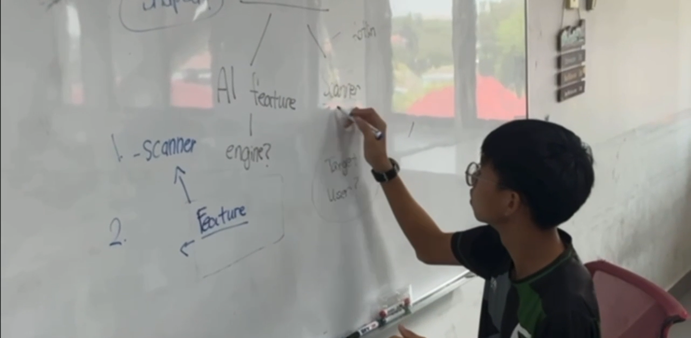
We researched existing solutions, target users, possible features and relevant technologies.
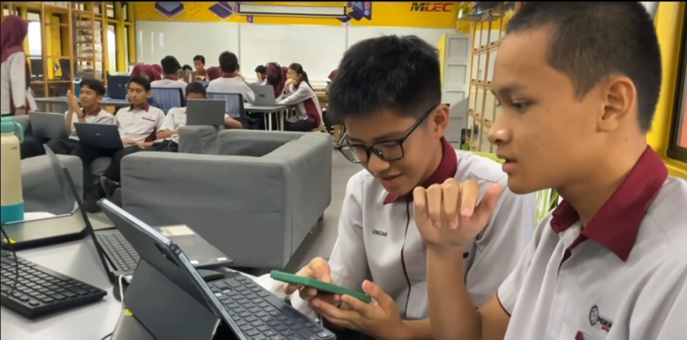
The application structure, user flow, screens and user experience were planned.
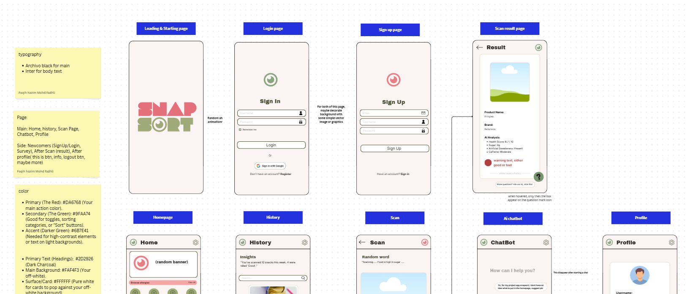
The mobile application was developed using Android Studio and its core functions were implemented.
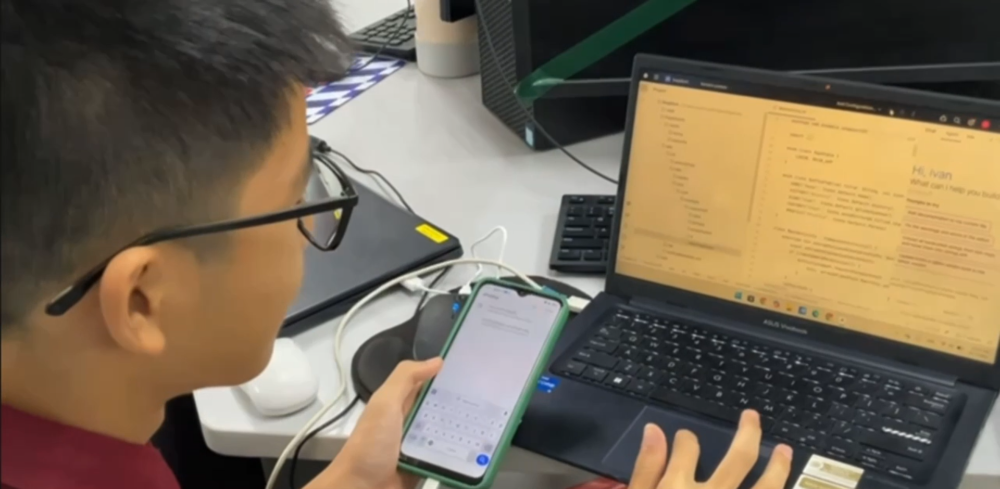
TensorFlow-based recognition and Groq-powered AI analysis were integrated into the application.
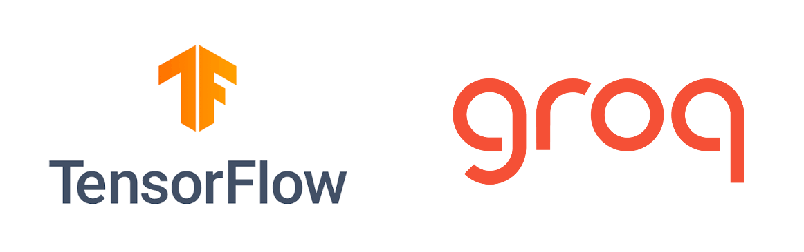
The application was tested to identify errors and areas for improvement.
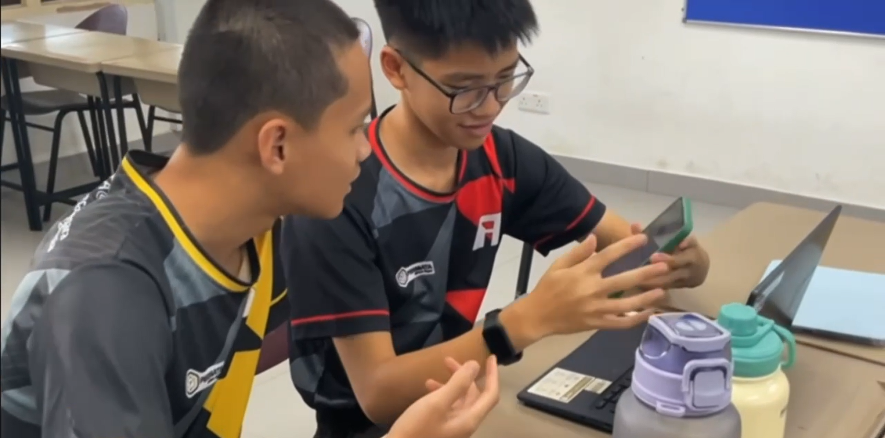
Evidence, screenshots, presentation materials and the final project website were prepared.
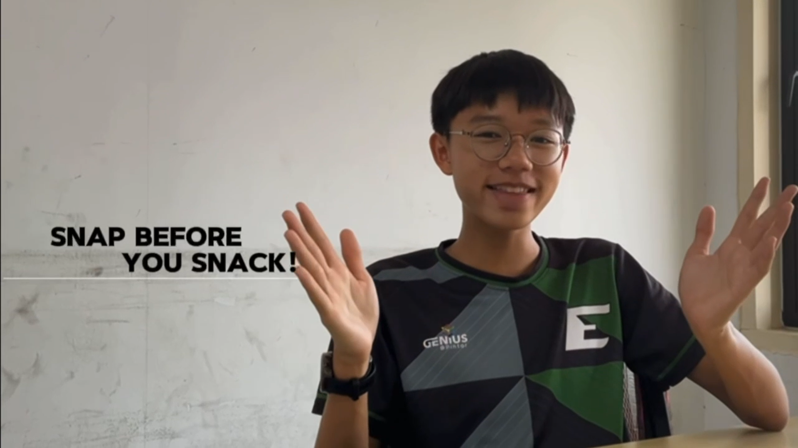
Evidence from the actual development process.
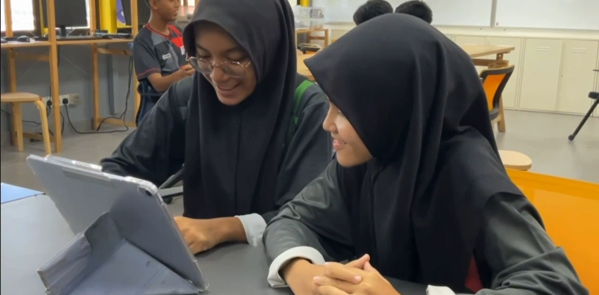

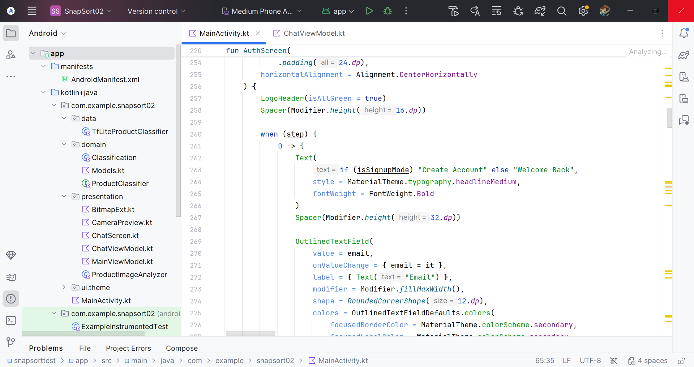
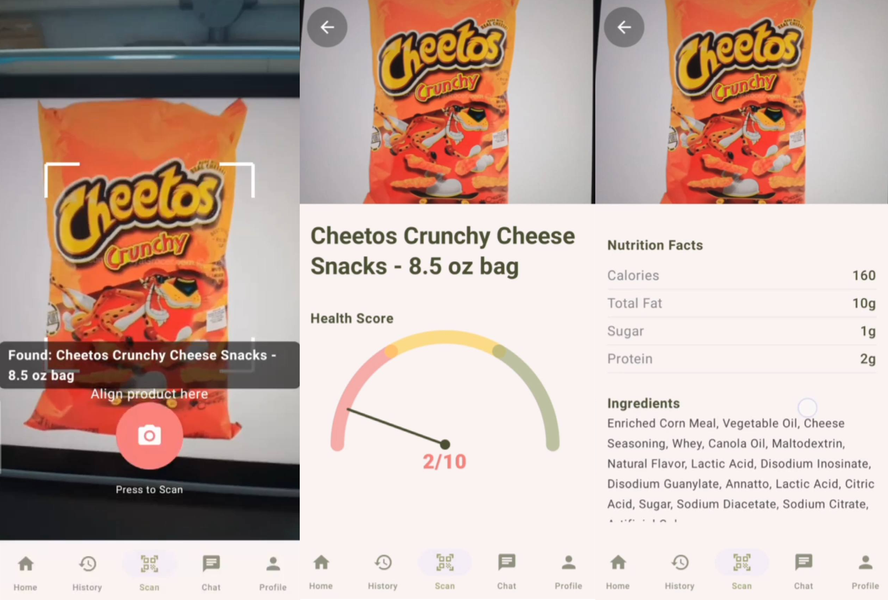
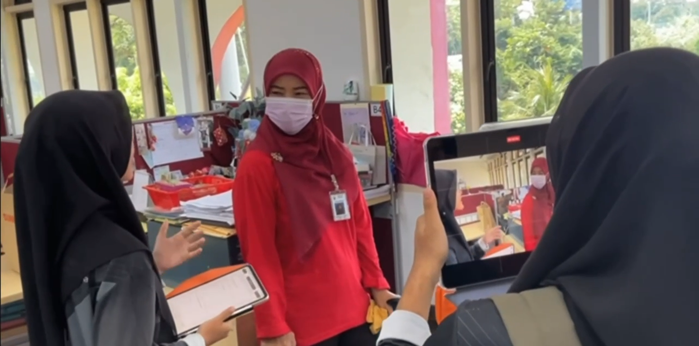
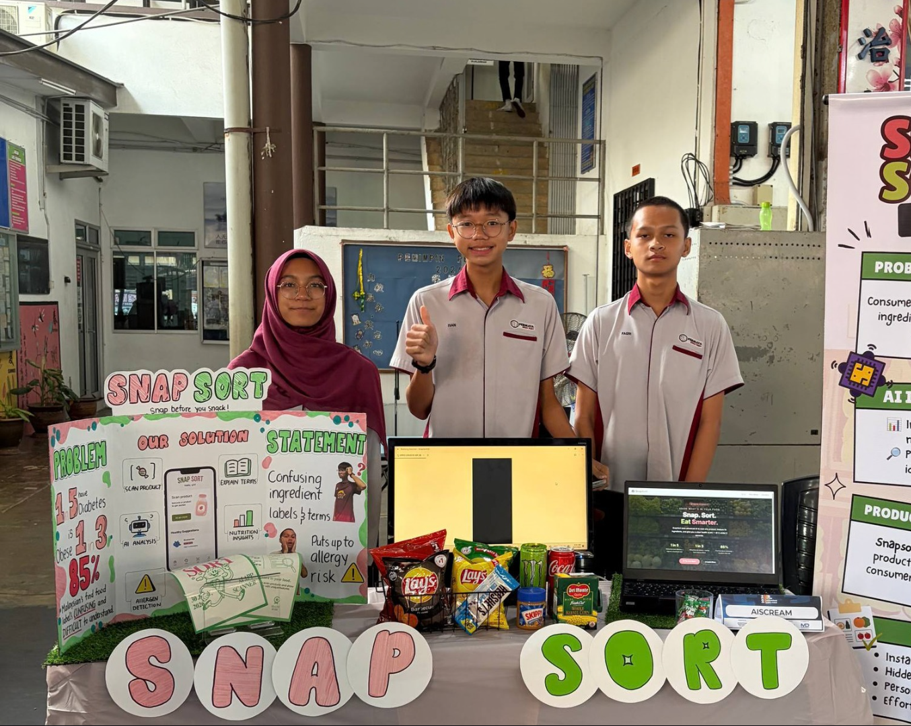
Initial project idea and planning.
Background research and competitor analysis.
Market research and user responses.
Wireframes and interface design.
Android Studio implementation.
TensorFlow and Groq implementation.
Testing and improvements.
Completed Snap Sort application.